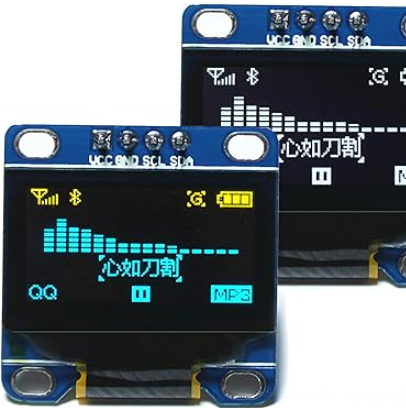
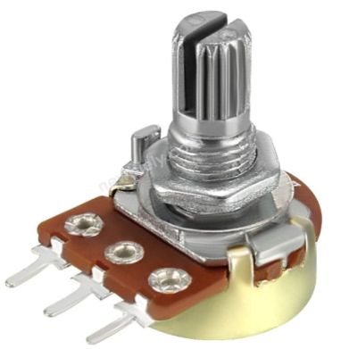
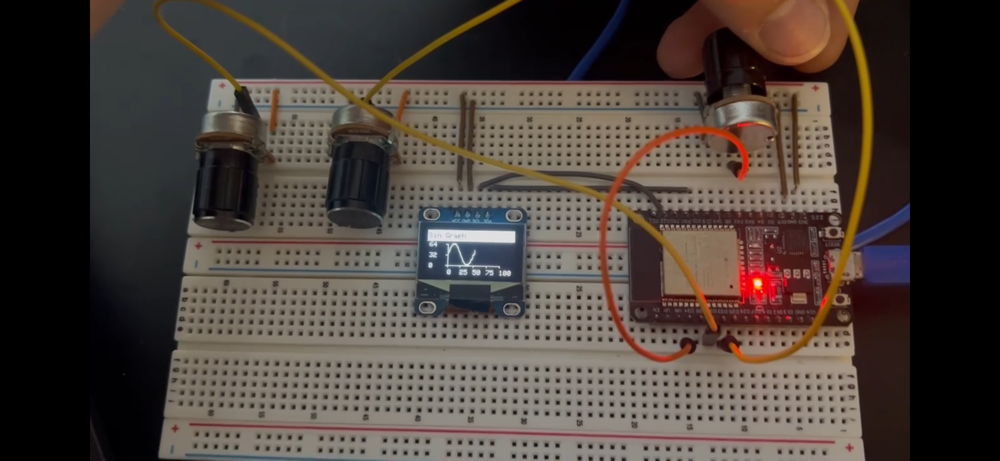
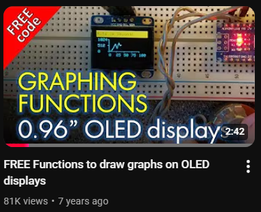
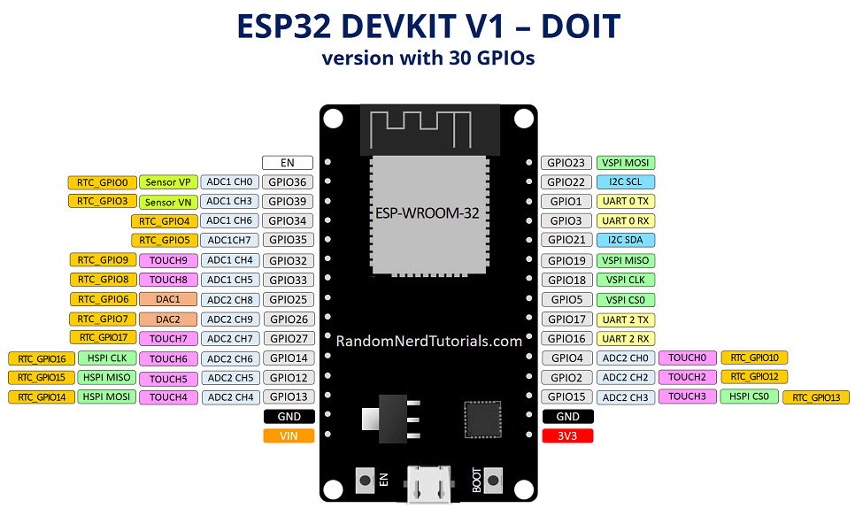
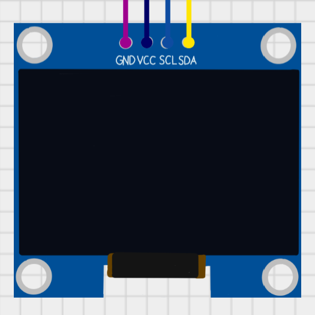
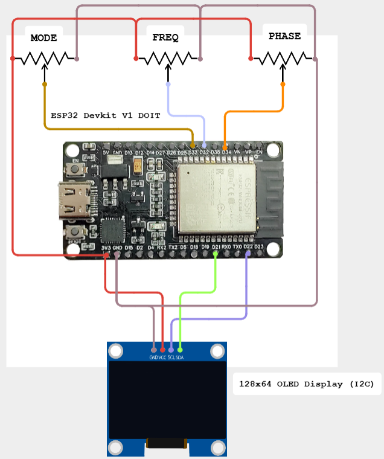

Parts List
ESP32 Devkit1

128x64 OLED Display

3x Potentiometers


This is a project for my ESP32 to display functions on a 128x64 OLED display. The corresponding GitHub project README has more details
It is my first personal project that uses a library for an external product.
It can display sin, sawtooth, saw wave, square wave, and noise.
This project is inspired and forked from Kris Kasprzak's project for the Arduino Uno

ESP32 Devkit1
128x64 OLED Display

3x Potentiometers

ESP32 Pinout

128x64 OLED Screen

Overall Wiring Diagram

It uses a global x variable to and each call of the graph() function must increase x: x++.
It also uses global mode, freq, and phase variables that are attached to each of the potentiometers.
After initializing the ESP32's Serial interface in the setup() function, it then checks if the 1306 OLED screen is properly connected.
The program then displays the pre-loaded Adafruit logo before clearing the screen. It then moves to the loop() function.
The loop() function first reads each of the potentiometer values and assigns them to corresponding variables.
It then calls the checkMode() function, which determines what graph to animate depending on the global mode variable.
I would like to make the graph fade out before it loops, so it's not as jarring. This also might make switching modes look much better.
For future projects, this could be a real-time display for audio signals, as well as UIs for synths.